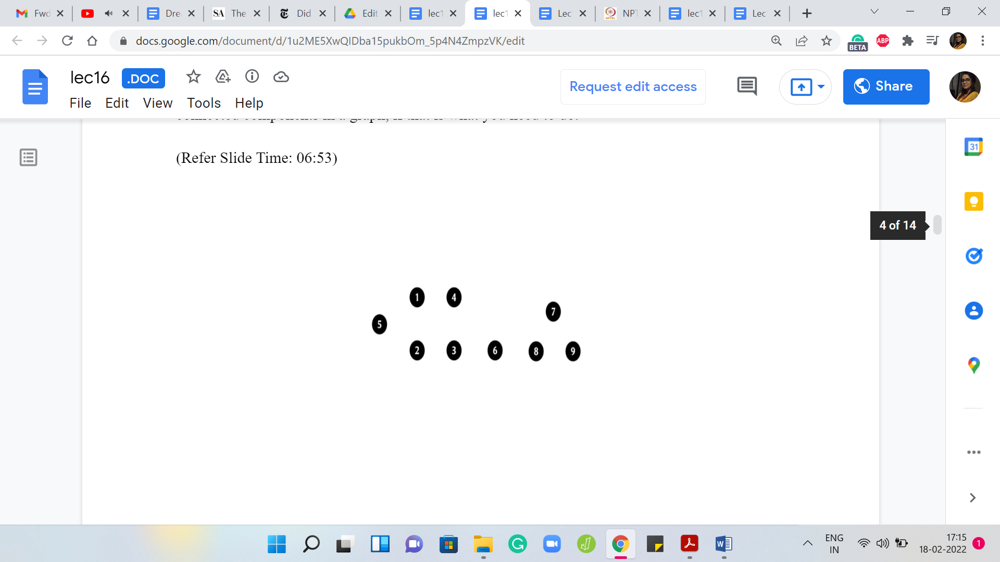
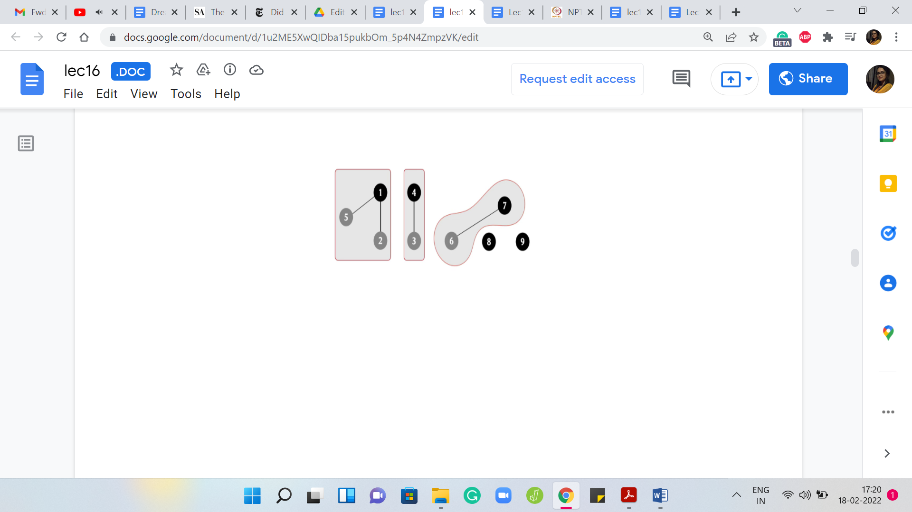
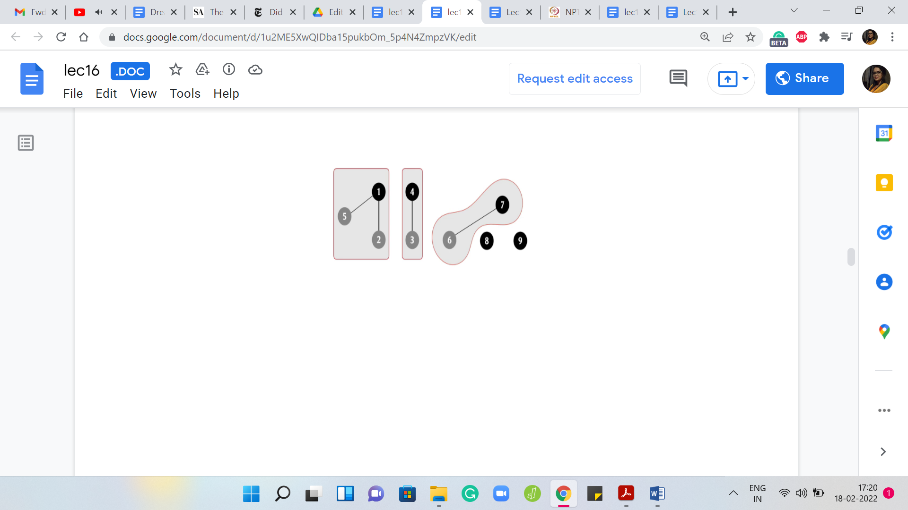
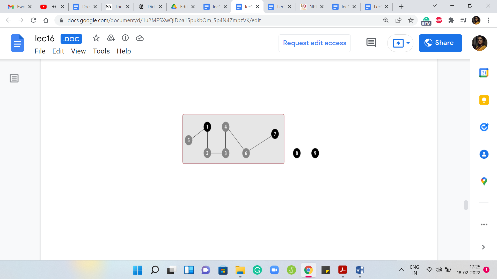
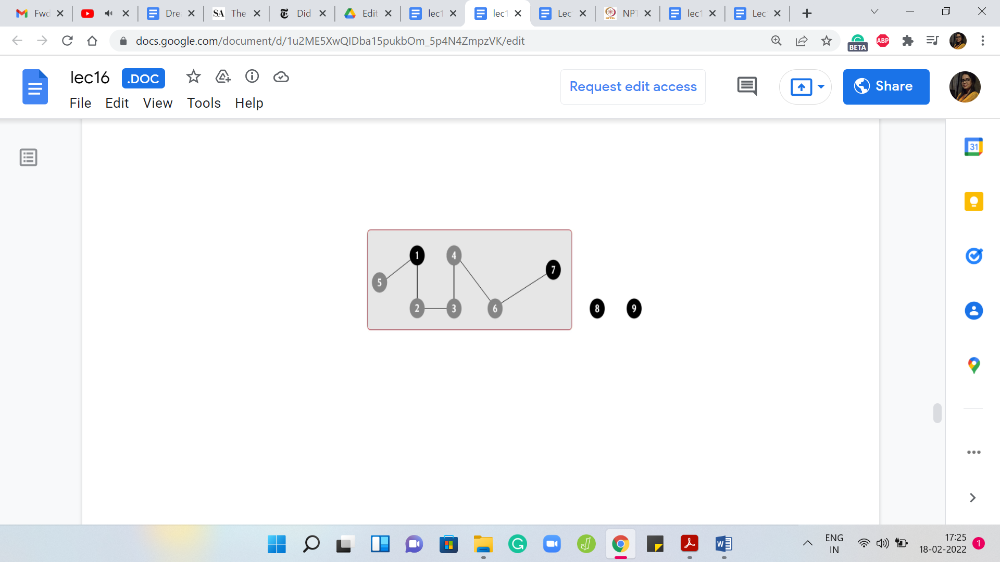
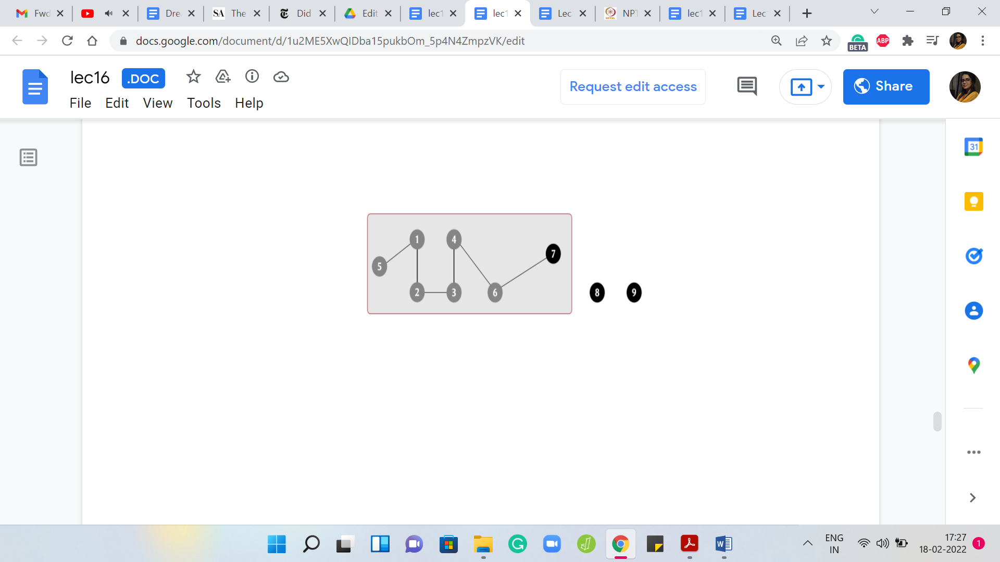
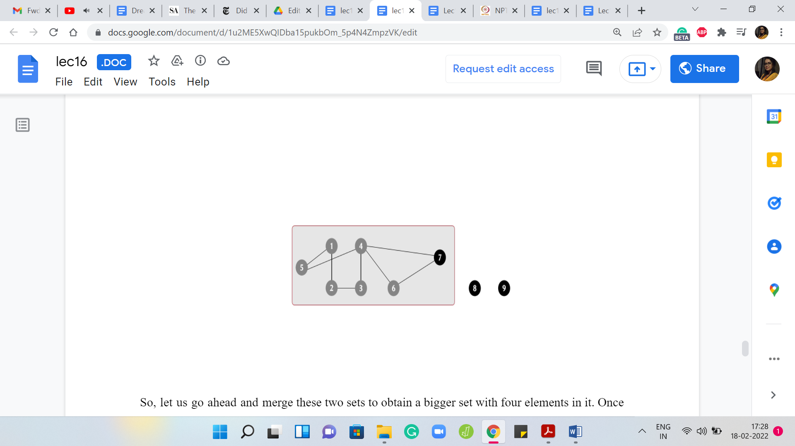

M 1 (An Introduction)
Lecture - 16
Disjoint Set Union - Module 1 (An Introduction)
(Refer Slide Time: 0:11)

Hello and welcome to a brand new week in Getting Started with Competitive Programming. So, this is week 4 and this week we will be talking about problems that can be solved using a data structure that helps you keep track of a collection of disjoint sets. The data structure itself goes by many names. Some people like to simply call it ‘disjoint sets.’ Some people call it ‘union-find disjoint sets,’ and so on.
We are going to call it ‘disjoint set union’ because that abbreviates to DSU and that is the most common abbreviation that I have seen when it comes to tagging systems on contest programming platforms. So, the plan is the following. In this module, we will introduce the data structure itself. We will explain what operations it is expected to support and we will talk about a couple of natural ways to implement the data structure, which turn out to be not efficient enough for use in practice.
We will then improve it to the professional version, which you can actually go ahead and use in your contests. Now, we will not be actually proving the guarantees that come with these implementations. If you are really curious, there is a beautiful book chapter, which goes over the details, and that is linked to in the description of this video.
Please go ahead and check that out. Let us begin by talking about the data structure itself. Notice that the description of a data structure is fully specified once you tell me what information it is supposed to maintain and what operations on that information you wanted to support. So, what do we want to store in a disjoint set union data structure?
(Refer Slide Time: 02:00)

Well, we want to maintain a collection of disjoint sets, as the name suggests, over some fixed universe. Throughout this discussion, I am going to use numbers from 1 to ‘n’ to denote the elements of my universe. Remember that in a specific application, you may not have numbers from 1 to ‘n’ as your universe; they could be something else. They could be characters, they could be the vertices of a graph, or just something completely different.
However, typically, the elements that you are working with can be indexed by numbers from 1 to ‘n,’ if there are ‘n’ of them. I think this is a convenient abstract notation to work with. Just remember that this may not always literally be your universe, depending on the situation you are working in. Now, each of these sets is represented by what is usually called a ‘leader element.’ Sometimes, it is also just called a ‘representative element.’
Just think of each set as being labeled by one of the elements in that set. If I want to talk about a specific set in this collection, I will be able to point to it or I will be able to talk about it by simply specifying its leader element. You can think of the sets as being packaged into boxes, each box has a label, and that label is essentially the value of the leader element or the representative element.
The leader element could be any element of the set. But what is important is that every set has exactly one of these. Since your sets are disjoint, the leader element completely specifies the set unambiguously. No element can be representing two sets because no element belongs to more than one set. That is the information that we want to maintain. What are the operations that we want to support? We want to support two kinds of operations. Sometimes you might want to support a few more, some routine ones, and we will see that when we get to the implementation.
But this is really the crux of it. Given an element, you want to be able to find the set that it belongs to. If I give you a number between 1 and ‘n,’ you want to be able to tell me which set it belongs to, and because of what we just discussed, this basically amounts to returning the leader element of the set that the element ‘i’ belongs to. It could be that ‘i’ itself is a leader element, in which case, we just return ‘i’ as the answer to this query.
Otherwise, if ‘i’ belongs to a set for which it is not the leader element, then we want to return the leader element of that set as the response to this query. The other thing that we want to do, and it is again hidden in the name, is a union operation. If I give you two elements ‘i’ and ‘j,’ then we want to be able to merge the two sets that ‘i’ and ‘j’ belong to. It is possible that when you are given this query, ‘i’ and ‘j’ happen to already belong to the same set.
If that is the case, in this query, we do not have to do anything. But if they happen to belong to two different sets, then we want to be able to merge them. That is the entire data structure. Now, in some situations, you may not know the entire universe upfront and elements of the universe may reveal themselves as a part of some process.
To handle such scenarios, you may want to implement an extra operation which you could call ‘make set’ or ‘create set’ or something like that, where the input is going to be a single element and your task will be to create a singleton set out of that one element. I have not written that down explicitly because we will not really be needing this most of the time.
But if you are in a situation where you do need it, it is usually very straightforward to implement. You can go ahead and do that as a simple exercise. It turns out that DSU is really useful in a wide variety of situations. Sometimes you can look at a problem statement and by just seeing the structure of the queries, you see that the problem is screaming DSU. It is very clear that is what you need to use.
Sometimes the connection is a little more subtle and you may have to really use your imagination to see that this is a DSU based problem or that DSU would come in handy here. In some advanced problems, you need to use DSU in combination with other techniques. Overall, this is a really useful tool to add to your toolkit. Just to demonstrate, let me show you how you can use this data structure, for example, to keep track of connected components in a graph, if that is what you need to do.
(Refer Slide Time: 06:53)
 

 
 
Let us say that you are given that you are working with a graph on some ‘n’ vertices, and to begin with, that is all that you know. All the vertices are just isolated and they form singleton sets on their own right and as you go along, you start getting information about the edges. Whenever a new edge is added to the graph, what you want to do is take the union of the connected components that the endpoints of the edge belong to.
Because, now essentially, the two components, which could potentially be the same, in which case, you do not need to do anything, but the two components that the two endpoints of the edge belong to now become connected by virtue of this edge being added. Notice that just in case you had a situation where edges were being added and removed, then it is going to be a bit tricky to use DSU. Remember that DSU only supports union operations. It does not support breakages. It does not allow you to separate the elements of a set once it is been created.
Once a gluing is done, it is a little bit like what you see in the Fevicol advertisements. It is permanent and you cannot really separate the set out later. If edges are coming and going, if they are being deleted as well, then you need a slightly different approach. But let us just look at how this would work if edges were only being added. To begin with, every element is a singleton set and it is the leader of its set because there is no choice.
Every element is a representative element and throughout this example, we will use these dark black circles to signify that an element is currently a leader element. As we go along, the ones that are not representatives will sort of fade away a little bit. Let us say, that to begin with, we are adding an edge between elements 1 and 2.
That gives us this one connected component with an edge. There are just two vertices in it and we can capture this by invoking the union operation on the endpoints of the edge. We combine 1 and 2 into one set and this currently has two representatives, which is a violation of our convention. Let us identify a leader element.
In this example, I will be identifying representatives quite arbitrarily. I am not going to evaluate these elements for their leadership skills or anything like that. But in general, you can imagine that if you are trying to merge or take the union of two sets, both of these sets already have their leader elements and when you do the union there are two natural choices for who should be the representative of the new set.
It could either be the leader element of the first set or it could be the leader element of the second set. You can imagine that if these are two corporations that are going through a merger, there may be a discussion about which one should persist as the new leader or the new face of the company. It could be that you might want to do a totally bizarre thing of picking some other element from one of the two sets as the leader.
But typically, that is not something that we would do because it is usually simpler to just assign one of the existing leaders as the new leader for the set that is obtained after taking the union. In general, it would be perfectly valid to make this choice arbitrarily. But again, thinking about the analogy of the merger, sometimes it may feel like it is natural that the bigger company retains rights to leadership.
It turns out that is sometimes a useful heuristic to employ. In fact, it can give you some provable performance guarantees. That is something that we will come back to later. We are getting a little bit ahead of ourselves at this point. As I said, in this example, the choices for leader elements are going to be completely arbitrary. So here, let us go ahead and assign 1 as the leader element. Next, let us say we have an edge between 4 and 3.
That gives us this set, which is obtained by taking the union (denoted by the symbol ‘🇺’) of 4 and 3, and once again, let us arbitrarily designate 4 to be the leader element. Next, let us say we have an edge from 5 to 1. So, we will just invoke union ‘5, 1.’ We want to take the union of the set that 5 belongs to, which happens to be a singleton set, and the set that 1 belongs to, which happens to be this component with two vertices.
Notice that in this example, the endpoints of the edge that you have introduced happened to correspond to the leader elements of their respective sets. This may not always be the case and it is not really relevant. All we need to do is make sure that the sets that these elements belong to get merged and we can do that in this case by just expanding the scope of the set 1, 2 so that it now includes 5.
As usual, let us make sure that this set has a unique leader element, and let us say that continues to be 1. Now, let us say that in the next step, we add an edge between 6 and 7. Once again, we invoke 6 🇺 7. That will give us this set here with two elements in it. Let us again make sure that this set has a unique leader element. Let us say that is going to be 7, and now let us add an edge between 4 and 6.
Notice here that this edge is connecting a leader element with a non-representative element. Once again, it does not really matter. The semantics of the operation is that we need to merge the sets that these two elements belong to and if they happen to be the same set, we do not have to do anything. But that is not the case here.
(Refer Slide Time: 12:47)

 

 
Let us go ahead and merge these two sets to obtain a bigger set with four elements in it. Once again, it currently has two representatives and since that is not allowed, let us make sure that there is just one. In this case, let us say we pick 7 as the choice of representative. Let us say that the next stage that we add is between 2 and 3, and notice that this time, you are actually connecting two elements, which are both not leaders in their own sets.
Once again, not so relevant. Remember that our task is to make sure that the set that 2 belongs to is merged with the set that 3 belongs to. Let us carry that out and once we have this merger, we get this one giant component. Again, there are two competing representatives, 1 and 7. Let us make sure that we knock one of them out.
In this case, let us identify 7 as the new leader element. Right now, our graph has three connected components: one involving 7 vertices, and then there are two other isolated components. Let us say that now the edge that we add is between 4 and 7. Notice that this has no real effect. For the record, you will want to invoke 4 🇺 7 but what that will do is basically lead to the discovery that 4 and 7 already belong to the same set.
So, there is no union. No actual merging is required in this case. This also happens for instance, if you add the edge between 5 and 4. In general, if you add an edge such that both of its endpoints are sitting in the same component, you will of course have to invoke the union operation to respect the fact that you have taken note of the fact that this edge is been added.
But when you actually try to execute the union, nothing non-trivial happens because nothing really needs to happen. Of course, until you actually check you will not know. Remember that when an edge comes in, you have no idea what effect it is going to have. It is only when you invoke the union operation that you get to discover if this actually created a non-trivial merger or whether it is just an edge that got added to an existing component.
That brings us to the end of this particular example. I will say that tracking connected components are one of the most common applications of DSU. If you can somehow identify that is what is going on in a problem that you are solving, that you can model it somehow as a graph and your task boils down to keeping an eye on the connected components, then chances are that DSU will come in handy somewhere.
Remember that if the process involves both the addition and removal of edges then what I just described will not quite work and you need slightly different techniques in that setting. But at least if you are in a situation where the edges are just being added, then this would certainly be a very relevant data structure to use. Now notice that in our entire discussion, we did not really talk about how to implement these operations.
We just assumed that if we could do these operations then we can track the connected components, as we just described. In fact, we only used the union operation so far. You could use the ‘find’ operation as well to identify which component a vertex belongs to, and with a little bit of extra book-keeping, you could also track additional interesting information about the state of the graph.
For instance, you could track the number of connected components. You could also track the sizes of the individual components. You will just have to remember to update them after you perform a union operation. But all of this can be done and once you have the basic data structure in place, these additions are really fairly straightforward to do.
In fact, in the implementation that we will see, we will actually track these two pieces of extra information, which is the number of components and the sizes of the sets and we will try to see how they evolve as we perform the base operations. So, let us take a pause here. I will encourage you to think about how you would implement this data structure on your own, especially if you have not seen it before.
If you have encountered it before, you probably will find a lot of our discussion familiar. But if you are seeing this for the first time, just spend some time thinking about how you will implement this yourself? What are the complexities of the individual operations? How long will it take you to perform a find? How long will it take you to perform a union?
I will say that I think there are two fairly natural ways of going about this and I expect that you will probably discover one or both of them. Whenever you are ready, come back and watch the second part of this module where we dig deeper into the actual implementation of this data structure. We will first discuss it theoretically and then we will finally wrap it up with actual code that you can use!